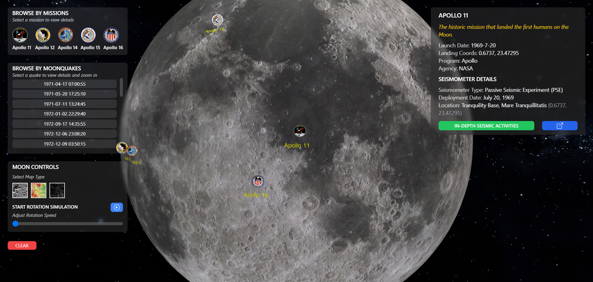
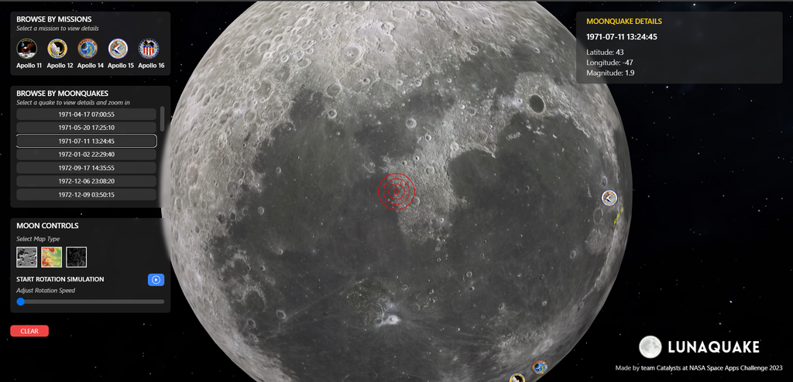

LunaQuake - NASA Space Apps Challenge 2023
a project to visualize seismic activities on the moon
High Level Summary:
Our moon has been visited by US-Apollo missions from 1968-1972, the seismic data retrieved from them has been visualized in a 3D environment but they lack a lot of functionalities for effective data analysis. Hence, we have developed an interactive 3D seismic event viewer app plotting animated seismic waves on a 3D globe of the Moon. We provide a user-friendly UI for exploring moonquakes and detailed information on historical seismic activities which is beneficial for analysts and moon enthusiasts.
Project Demo: Watch on YouTube
Final Project: Access the Project
Project Description:
“LunaQuake” is a project that is built upon the legacy of the Apollo missions. While the Apollo missions laid the foundation for lunar exploration, our project takes it further by enhancing our ability to analyze and understand the Moon's seismic activities.
This project allows users to get an interactive three-dimensional visualization of the moon to analyze seismic activity. Our web app welcomes visitors with a splash screen by “The Catalysts”. Our project collects data from all the Apollo missions and depicts them into user-friendly traversal patterns.
The data is classified as per the Apollo missions i.e. Apollo-11, 12, 14, 15, 16. On click, the moon immediately rotates to exactly face the coordinates of the landing site of the mission. A brief information about the mission date, and coordinates of the landing (latitude and longitude) along with the seismometer’s description is provided. Users can also evaluate in-depth seismic activities on an exact day of the year. MH1, MH2, and Mhz can be studied by researchers, and they can visit the official NASA site through our app.
27 moonquakes that occurred on the surface of the moon are presented and can be pin-pointed to their exact epicenters along with their magnitudes. The “moon controls” tab includes three types of moon views namely geographical, topographical, and elevation. The rotation speed of the moon can also be adjusted for dramatic effect. A “Clear” button is provided to return to the default mode of the moon.
Technologies Used:
- React JS (Vite) for Frontend
- Obspy to process seismic data from Apollo missions
- ThreeJS (globe.gl) to render Moon
- VSCode as an IDE
- Git and GitHub for version control
Space Agency Data
- NASA Apollo 11 Passive Seismic Experiment (part of EASEP package)
- Full Apollo EASEP and ALSEP descriptions
- NASA's Planetary Data System (PDS)
- Scientific Visualization Studio Computer Generated Imagery (CGI) Moon Kit
References:
- Geological Digressions
- Solar System Scope
- Astrology